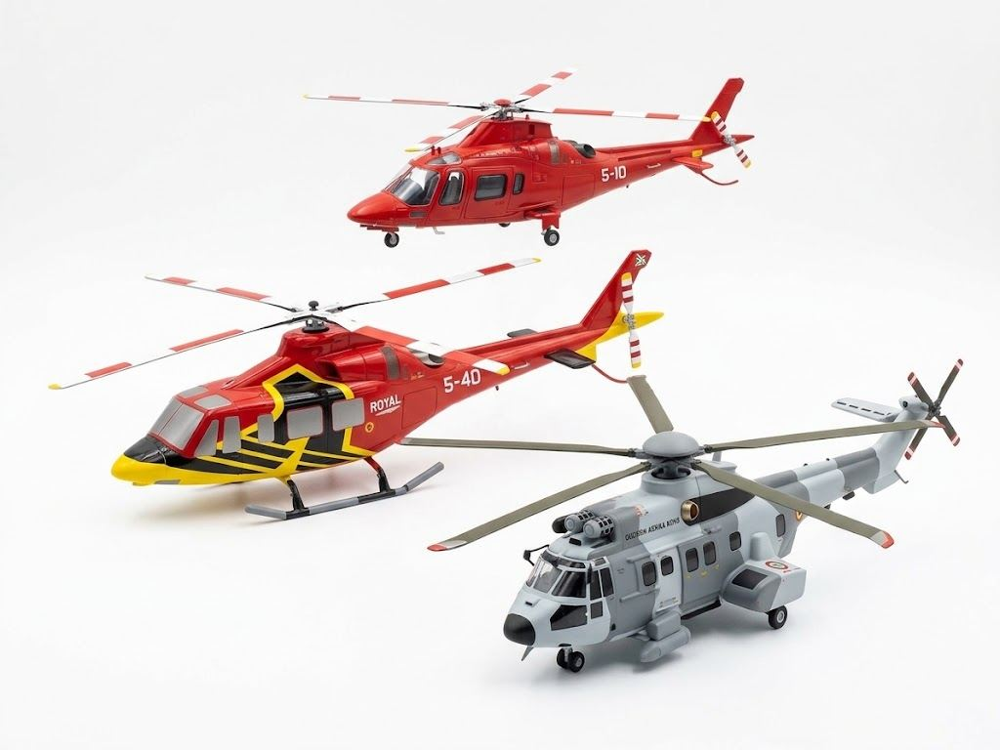
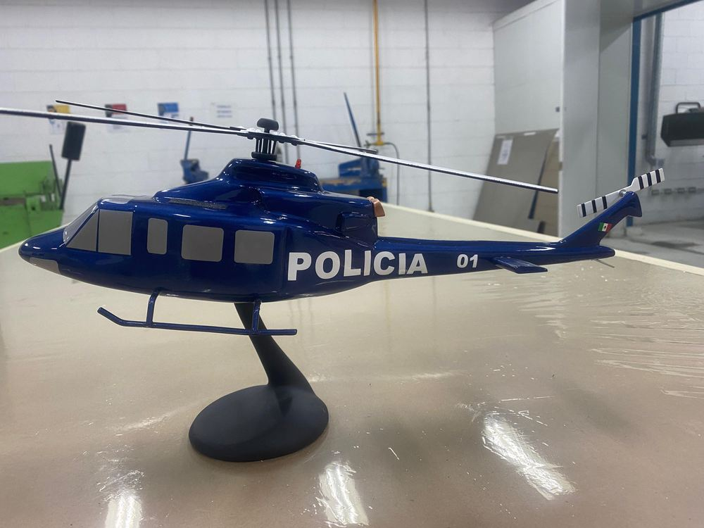
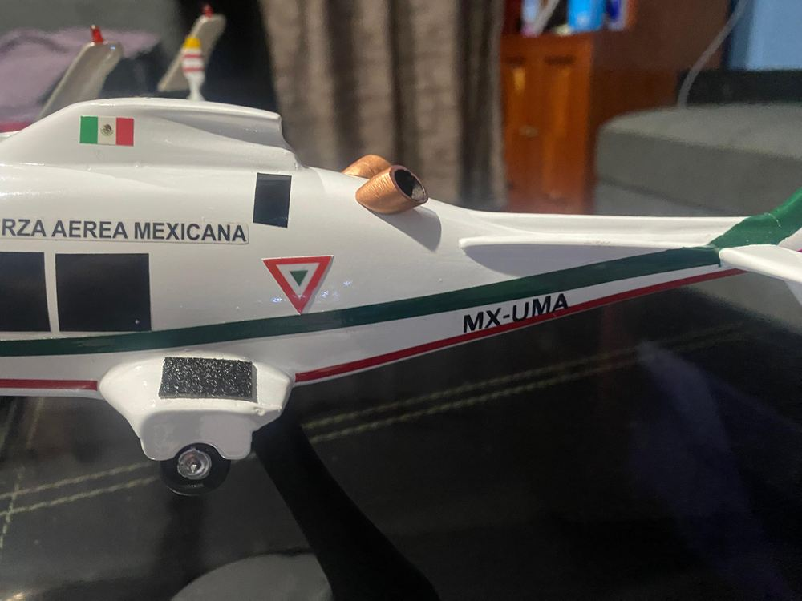
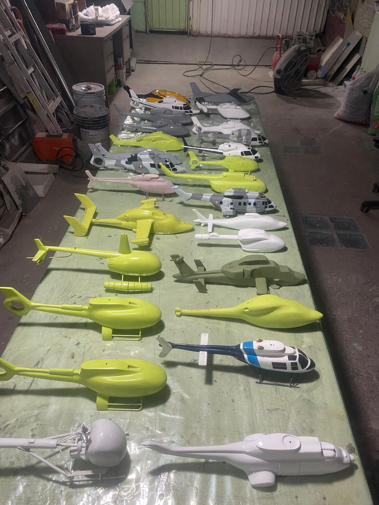
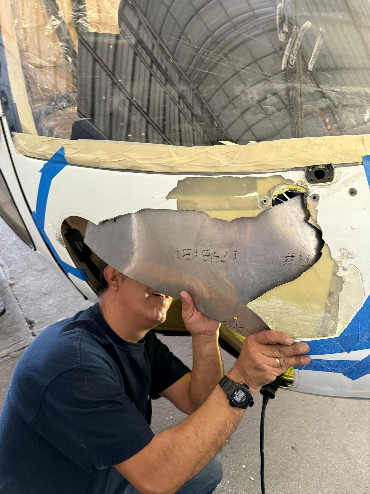

HELIESCALA
POR AERORESINAS · HECHO A MANO
Catálogo
Tu aeronave
Cómo se hace
Galería
Aeroresinas ↗
English
WhatsApp
Réplicas en resina · por encargo
Casi cualquier helicóptero,
a escala y hecho a mano.
Encargar una réplica
Ver el catálogo
30+
Modelos hechos
Resina
Material
[1:XX]
Escalas

Algunos de los que ya ha hecho
CATÁLOGO
Lo que más se encarga
La réplica de tu propia aeronave
Pedir la de tu matrícula


Cómo se hace una
TALLER

Más piezas
GALERÍA

De dónde salen
Aeroresinas, reparación de aeronaves
Ver Aeroresinas
Dile cuál quieres
WHATSAPP
[+52 XX XXXX XXXX]
CORREO
[correo@heliescala.com]
TALLER
[CIUDAD, ESTADO]
Pide tu réplica
NOMBRE
MODELO
LIBREA Y MATRÍCULA
Enviar por WhatsApp
✕
La réplica
Encargar esta
←
→